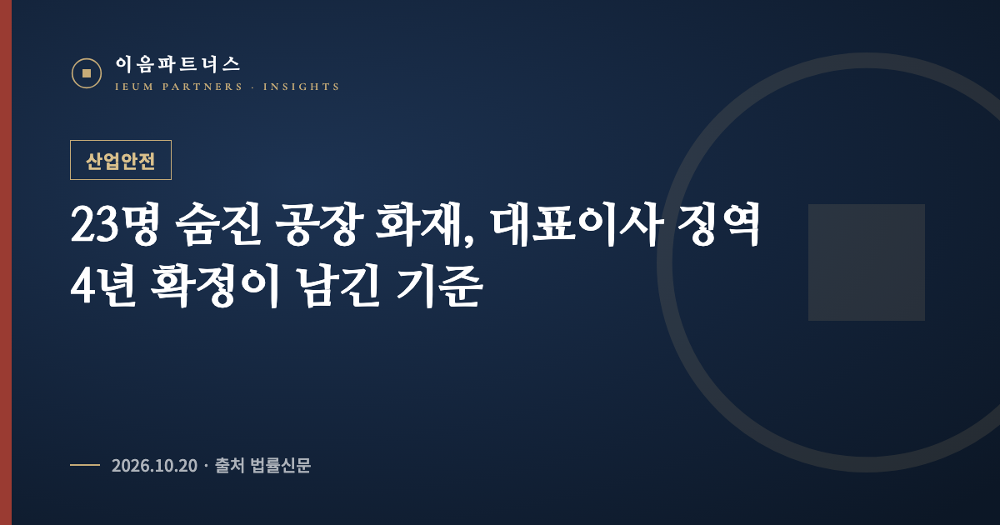

23명 숨진 공장 화재, 대표이사 징역 4년 확정이 남긴 기준

안전보건 업무를 맡을 임원(CSO, 안전보건최고책임자)을 따로 두면 대표이사는 중대재해 책임에서 벗어날 수 있을까요. 2026년 10월 20일 대법원은 23명이 숨진 공장 화재 사건에서 대표이사의 징역 4년을 확정하면서 이 물음에 답을 내놓았습니다. 이 글에서는 판결 내용과 대법원이 제시한 기준, 대표님이 확인할 점을 정리합니다.
중대재해처벌법 시행 이후 실무에서 의견이 갈리던 쟁점이라, 안전 책임자를 두었거나 둘 계획인 회사라면 꼭 짚어 볼 판결입니다. 우리 회사 안전보건 조직과 결재 구조를 함께 살펴보고 싶으시다면 카카오톡 채널 이음파트너스로 문의해 주세요.
어떤 사건이었나
2024년 6월 24일 경기 화성시의 리튬 1차전지 공장에서 작업을 위해 쌓아 둔 전지가 폭발하면서 불이 나 근로자 23명이 숨지고 9명이 다쳤습니다. 대표이사는 폭발·화재 위험을 확인하고 개선할 절차를 마련하지 않고, 재해 예방에 필요한 예산과 비상대응 매뉴얼 등을 갖추지 않은 혐의로 기소됐습니다(법률신문).
| 구분 | 내용 |
|---|---|
| 1심 | 대표이사와 총괄본부장 각각 징역 15년 |
| 항소심 | 일부 혐의 무죄, 유족과 합의한 사정 등을 고려해 대표이사 징역 4년·총괄본부장 징역 7년으로 감형 |
| 대법원 | 2026년 10월 20일 상고 기각, 대표이사 징역 4년·총괄본부장 징역 7년과 벌금 100만 원·회사 벌금 8억 원 확정(2026도7102) |
대법원이 제시한 기준
법률신문은 판결의 첫째 요지를 “안전 책임자는 직함보다 실제 권한으로 판단”이라고 정리했습니다(법률신문). 독립된 안전보건 조직이 있는지, 결재·보고 체계에서 최종 결정권자가 누구인지, 해당자의 자격과 경력, 대표이사가 실제 업무에 얼마나 관여했는지 등을 종합해 살핀다는 뜻입니다.
또 안전보건업무책임자가 있더라도 사업 방향, 조직, 예산·인력 배분, 책임자 선임과 권한 부여처럼 회사 전체를 총괄하는 영역에서는 대표이사가 여전히 경영책임자로서 의무를 집니다. 양쪽의 의무 위반이 모두 사고 원인이 됐다면 두 사람 모두 책임을 질 수 있습니다(법률신문).
이번 사건에서 총괄본부장은 안전보건업무책임자에 해당하지 않는다고 판단됐습니다. 법률신문은 이번 판결이 위험성평가(사업장의 위험 요인을 찾아 평가하고 줄이는 절차)를 통한 의무 이행 요건도 처음 제시했다고 전했습니다.
우리 회사에는 어떤 의미가 있을까
판결을 분석한 법률신문 기고는 앞으로 CSO를 선임했다는 사실만으로 대표이사가 면책을 주장하기는 어려울 것으로 내다봤습니다. 수사 실무에서도 대부분의 사건이 대표이사가 경영책임자에 해당한다는 전제로 진행되고 있다고 설명했습니다(법률신문).
대표님이 지금 확인할 것
- 안전보건 책임자를 두었다면 조직·인력·예산에 대한 결정권이 실제로 위임되어 있고, 근거 규정이 있는지
- 안전 관련 예산과 인력 배분을 누가 최종 결재하는지, 대표이사 결재 영역의 의무가 이행되고 있는지
- 유해·위험 요인을 찾아 개선하는 절차와 비상대응 매뉴얼이 문서로 있고 실제로 운영되는지
- 위험성평가를 정기적으로 하고, 결과에 따른 개선 기록을 남기는지
참고한 자료
- 안전보건최고책임자(CSO) 선임과 대표이사의 ‘경영책임자등’ 해당 여부 — 법률신문 (2026.10.29)
- 대법, 대표·안전책임자 책임 구분 기준 첫 제시 (판결 기사) — 법률신문 (2026.10.20)
안전보건 조직과 결재 구조를 판결 기준에 맞춰 점검해 보고 싶으시다면 카카오톡 채널 이음파트너스로 문의해 주세요.
※ 이 글은 일반적인 정보 제공을 위한 것으로, 개별 사안은 세무사·노무사 등 전문가와 함께 확인하시기 바랍니다.